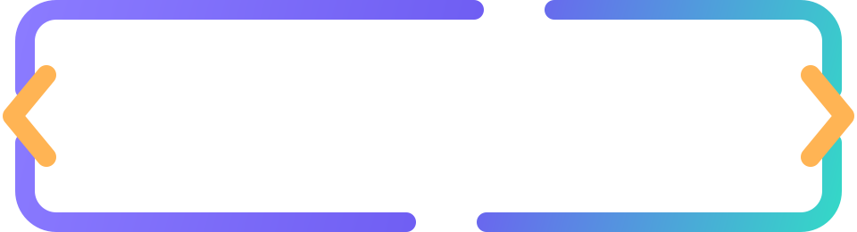
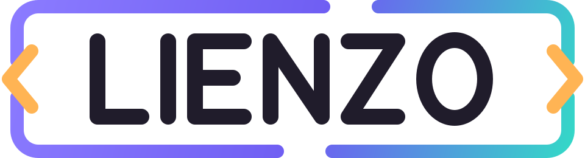

ESTUDIO DE INTERFACESLIENZO / Cinco destinos. Una dirección clara.
Navegación de cristal con indicador
Un estudio interactivo con indicador activo y exploración independientes, cinco destinos útiles, favoritos locales, filtros, iconos editables y navegación horizontal o vertical.
05 destinos vivosHTML · CSS · JS
Izquierda / derecha: explorar · Enter: abrir · Inicio / Fin: extremos
Explora con las flechas del eje actual y activa con Enter. El foco no cambia el destino seleccionado.
Cómo llevarlo a tu proyecto
Descomprime el ZIP y abre index.html. Personaliza la demo y descarga el HTML editado. Conserva los estilos, scripts, fuentes y avisos junto a él. Los cambios y favoritos de la demo se reinician al recargar.